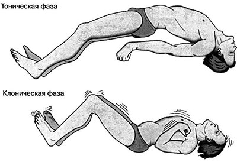

Визначання
Епілепсія - це хвороба, яка виникає в результаті надмірної патологічної електричної активності окремих частин головного мозку, що приводить до періодичних судомних нападів. Напади можуть бути різними. Деякі люди просто застигають на місці на кілька секунд, в інших - присутні повноцінні судоми. Епілептичний припадок - стан, який пов'язаний з надмірними гіперсинхронними електричними розрядами нейронів головного мозку.

Симптоми
Оскільки епілепсія викликається аномальною електричною активністю клітин головного мозку, в припадок можуть включатися будь-які процеси, контрольовані мозком. Наприклад:
- Порушення мови і вимови
- Тимчасова загальмованість
- Аура
- Спазми мімічної мускулатури
- Неконтрольовані посмикування рук і ніг
- Втрата свідомості або її порушення
Причини виникнення
У половині випадків не вдається встановити причини виникнення епілепсії. В іншій половині випадків епілепсія може бути викликана такими чинниками, наприклад:
- Генетична схильність
- Пухлина головного мозку
- Травма голови
- Судинні захворювання головного мозку (інсульт, артеріо-венозні мальформації)
- Склероз гіпокампа (мезіальний склероз скроневої долі)
- Запальні захворювання (менінгіт, СНІД, вірусний енцефаліт, туберозний склероз можуть призвести до епілепсії)
- Порушення розвитку, такі як кортикальна дисплазія, DINET, синдром Дауна.
Фактори ризику
Певні чинники можуть збільшити ризик епілепсії.
- Вік. Найбільш поширеним часом початку епілепсії є раннє дитинство і вік після 65 років.
- Стать. У чоловіків трохи більший ризик розвитку епілепсії, ніж у жінок.
- Сімейна історія епілепсії.
- Травми голови.
- Інсульт та інші судинні захворювання.
- Інфекції нервової системи. Інфекції, такі як менінгіт, який викликає запалення головного мозку або спинного мозку, можуть збільшити ризик розвитку епілепсії.
- Часті судоми у дитячому віці. Висока температура в дитячому віці іноді може викликати судоми, що в подальшому може призвести до розвитку епілепсії в більш пізньому віці, особливо якщо наявна сімейна схильність до епілепсії.
Методи обстеження та діагностика
- Лікар може використовувати цілий ряд методів обстеження для діагностики епілепсії, від неврологічних досліджень до таких складних методів візуалізації, як МРТ.
- Неврологічні і поведінкові методи обстеження. Лікар перевіряє рухові здібності пацієнта, його поведінку і інтелектуальний потенціал, щоб з'ясувати, як приступи впливають на нього.
- Аналізи крові. Зразок крові досліджується на наявність ознак інфекції, електролітного дисбалансу, анемії або діабету, з якими можуть бути пов'язані епілептичні припадки.
- Електроенцефалограма (ЕЕГ). Це найбільш поширене дослідження для діагностики епілепсії. ЕЕГ - це запис електричної активності мозку за допомогою електродів, тимчасово підключених до шкіри голови. Якщо у пацієнта епілепсія, на ЕЕГ є зміни нормальної структури мозкових хвиль, навіть за відсутності нападів. У таких випадках говорять про судомну готовність головного мозку. Прояв епілептичної активності на ЕЕГ - реєстрація піків або спайків, високоамплітудних гострих хвиль і комплексів пік-повільна хвиля. Лікар може контролювати пацієнта на відео при проведенні ЕЕГ в момент неспання і сну в надії записати напади. Іноді при проведенні дослідження лікар може спровокувати напад, наприклад, шляхом позбавлення сну перед дослідженням.
- Комп'ютерна томографія (КТ). При появі перших нападів епілепсії пацієнтові призначають комп'ютерну томографію. КТ машини використовують рентгенівське обладнання для отримання зображення поперечного перерізу мозку і черепа. За допомогою КТ можна виявити порушення в головному мозку, які можуть бути причиною нападів, включаючи пухлини, кровотечі і кісти.
- Магнітно-резонансна томографія (МРТ). МРТ забезпечує більш докладну, в порівнянні з КТ, інформацію. Магнітно-резонансна томографія використовує радіохвилі і сильне магнітне поле для отримання детального зображення головного мозку. МРТ може виявити аномалії мозку, пухлини та інші причини судом.
- Функціональна МРТ (ФМРТ). Функціональна МРТ визначає зміни кровотоку, що виникають при роботі певних частин мозку. Лікарі зазвичай використовують ФМРТ до операції для точного визначення розташування центрів мови, щоб уникнути їх пошкодження при операції.
- Позитронно - емісійна томографія (ПЕТ). ПЕТ використовує невелику кількість низькодозових радіоактивних речовин, які вводяться у вену і допомагають візуалізувати активні ділянки мозку, виявляючи відхилення.
- Нейропсихологічні тести. Ця група включає тести IQ, оцінку пам'яті й мови, які допомагають лікарям визначити місце походження нападів. Цей тип дослідження проводиться перед хірургічним лікуванням епілепсії.
Перша допомога при епілептичному нападі
- Акуратно поверніть хворого на бік.
- Покладіть щось м'яке під нього і під голову.
- Послабте щільно прилягаючі частини одягу.
- Не намагайтеся пальцями відкрити рот. Ніхто і ніколи не "проковтнув" свого язика під час нападу - це фізично неможливо.
- Не намагайтеся підняти хворого, кричати або трясти його.
- Якщо ви спостерігаєте судоми, приберіть небезпечні предмети, що можуть травмувати хворого.
- Залишайтесь з хворим до прибуття медичного персоналу.
- Спостерігайте за хворим, щоб представити детальну інформацію про нього.
- Визначте час початку та тривалість нападу.
- Зберігайте спокій та заспокойте оточуючих.